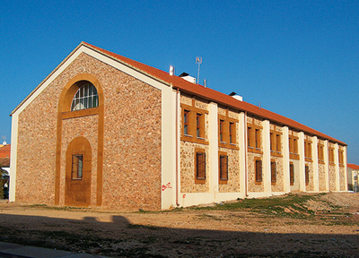

Breve historia agrícola y ganaderaAutor: Jaime Gallego MonederoAlcázar en el tiempo (3ª parte) En el primer tercio del siglo XIX la crisis de subsistencia más violenta se padeció entre 1802 y 1806. Aunque, en Toledo, en los peores meses de 1802, las arcas arzobispales soportaban el pago de un cuarto por cada pan vendido en las tahonas, la crisis afectó por igual a todos los cereales y a todas las provincias. Alcázar, al situarse dentro de una gran zona productora de trigo, su Priorato, con posibles excedentes y relativamente alejada de Madrid, tiene unas diferencias de cotización más reducida que en el resto de mercados. En 1800-1801 existió una desigualdad de 5,5 reales (52 reales, frente a 46,5 reales); en 1801-1802 se llegó a los 41,3 reales (91,3 reales, frente a 50); y en 1802-1803 no superó los 16 reales (86 reales, frente a 70). Sin embargo, en julio de 1802 el precio subió, alcanzando valores por encima de los de los otros mercados. En agosto, el valor del trigo descendió a 70 reales, pero en diciembre ya costaba 85 reales cada fanega, y con pequeñas fluctuaciones mantuvo esta estimación hasta ese mismo mes de 1803. Alcázar tenía un comportamiento extraño. En marzo de 1802 marcaba una cotización del trigo 25 reales por debajo de la de Madrid y 20 reales por debajo de Toledo y Ocaña, pero en tres meses sobrepasó a estas ciudades, al pagarse cada fanega a 90 reales. Compras en el Priorato con destino a Madrid o para proveer al ejército ante lo barato de su precio, podrían ser la explicación a este fenómeno, pero la consecuencia fue una subida que explicaría en parte los motines de hambre de Herencia, Manzanares y de otras poblaciones del sudeste de la provincia de Toledo. Las cotizaciones mensuales medias registradas en el «El Correo Mercantil de España y sus Indias» en el mercado alcazareño fueron (valor en reales): La etapa de la guerra de la independencia solo va a dejar miseria, pues los guerrilleros y los franceses van a vaciar los pósitos de los pueblos por los que pasan o en los que se asientan. Así, mientras que en 1809 se le abría el pósito de Alcázar al Tío Camuñas, los franceses lo saquearán en septiembre de 1811. Estos saqueos durarán hasta 1813, año en que los franceses se retiran al norte, pero la agricultura necesitará de manos jóvenes que recuperen todo lo perdido. Con la desamortización de Mendizábal, las tierras pertenecientes a la Iglesia y a las Órdenes militares fueron vendidas, pero en lugar de ir a las manos de sus aparceros, fueron a engrosar las propiedades de los grandes propietarios. En 1857, Madrid celebró una exposición agrícola donde D. Juan Álvarez Guerra expuso algunos de los productos de sus fincas, obteniendo una medalla de bronce para el candeal y mención honorífica para las almortas, vinagre, queso y barrilla. En 1867, el Alcalde afirmaba que “el plantío de este término es muy poco, pues es muy corto el número de olivas en que exclusivamente consiste ya que las viñas son tan pocas que ni siquiera merecen mencionarse. Se sacan por sus mismos dueños, por lo poco que producen.” Los cultivos se reducían a candeal, centeno, avena, cebada y titos, todo en tierra de secano. Tal era la situación, que en 1868 y 1874 la sequía obligó a los labradores a echar las mulas a la Vega, propiedad del Ayuntamiento, por no poder darles de comer. La Sociedad vasca Loidi y Zulaica S.A. también pondrá sus bodegas en esta población, en la calle Marqués de Mudela. En 1869 la renta de los Bonos del Tesoro, propiedad del ayuntamiento, sirvió para dar ayuda a 75 labradores, ayuda que ascendió a 11.560 escudos. El ayuntamiento no pudo hacer frente a la crisis que esta ayuda le supuso y dimitió en pleno. En 1879 la plantación de viña consistía en 378 hectáreas de viña vieja y 244 de viña nueva. El ferrocarril trae industriales e inversores a la población. En 1867 abre sus puertas la Bodega del Marqués de Mudela (Francisco José Ribas y Ubieta), en la calle que hoy lleva su nombre, con muelle propio de ferrocarril. Por entonces el número de cepas en el término se encontraba entre las 15.000 y 20.000, y la bodega empezó a pagar a 75 céntimos de peseta la arroba de uvas. En el término municipal de Alcázar de San Juan el cultivo de la vid pasará de casi no existir a un aumento significativo: 622 Has. en 1869, 3.500 Has. en 1884 y 4.595 Has. en 1888. D. Julián Prats, comerciante de tejidos de Madrid y presidente del Círculo de la Unión Mercantil, puso en marcha las bodegas que más tarde serán las Bilbaínas. Tres militares, Julián, Honrubia y Rojas, fundarían la Bodega de la Espada en la calle de la Unión, plantando viñas en la Madrila y las Cuadrillas. La Sociedad vasca Loidi y Zulaica S.A. también pondrá sus bodegas en esta población, en la calle Marqués de Mudela. Las Exposiciones se suceden y, en 1882, con motivo de la inauguración de la Estación Vitícola y Enológica de la capital, Alcázar es invitada. En la Exposición de París de 1889 era galardonada la Bodega de la Espada por varios de sus vinos. Y seguían las plagas de langosta. 1886 se recordará por ser uno de los años en que las cosechas fueron más afectadas. El 6 de junio de 1890 el Ayuntamiento aprueba “anticipar 2.000 pesetas de los fondos municipales para acabar con la plaga de langosta que amenaza destruir sembrados y plantíos”. También de finales de siglo es la bodega “La Covadonga”, puesta en marcha por la Banca Herrero. La construcción es de Eduardo Adaro Magro(1848-1906). El “Anuario del comercio, de la industria, de la magistratura y de la administración, Madrid 1985” informa que “En 1894 Alcázar contaba con ocho fábricas de aguardiente, tres de bizcochos, una de harina, una de bebidas gaseosas, una de pólvora, dos de quesos y una de yeso.” Alcázar empieza a ser una ciudad de peso económico en la provincia. |
 Revista San Isidro 2023 |
BREVE HISTORIA AGRÍCOLA Y GANADERA (2ª Parte)
En el Priorato de San Juan se tenía costumbre de prestar a los agricultores un tercio de los diezmos para la siembra.
En el Libro de Cuentas 1612-1628 folio 90 nos encontramos la siguiente reseña:
“Mas doce reales que pagó a Diego García de Siruela, vecino desta villa, ...
En el Priorato de San Juan se tenía costumbre de prestar a los agricultores un tercio de los diezmos para la siembra.
En el Libro de Cuentas 1612-1628 folio 90 nos encontramos la siguiente reseña:
“Mas doce reales que pagó a Diego García de Siruela, vecino desta villa, ...

EL HISTORIAL CAMPESINO
Fácil es señor doctor,
decir no bebas más vino
y que difícil que es
para el que nació campesino.
Yo que desde muy pequeño
dediqué mi vida entera
y en darle puse mi empeño,
rango, prestigio y solera..
Fácil es señor doctor,
decir no bebas más vino
y que difícil que es
para el que nació campesino.
Yo que desde muy pequeño
dediqué mi vida entera
y en darle puse mi empeño,
rango, prestigio y solera..
ALGUNOS MILAGROS DE SAN ISIDRO
No todos sabrán de la gran cantidad de milagros que se le atribuyen a San Isidro Labrador, muchos de ellos, post mortem. Cuatrocientos treinta y ocho milagros en total, de los cuales vamos a contar aquí los más conocidos.
No todos sabrán de la gran cantidad de milagros que se le atribuyen a San Isidro Labrador, muchos de ellos, post mortem. Cuatrocientos treinta y ocho milagros en total, de los cuales vamos a contar aquí los más conocidos.
SOLAMENTE HACE 50 AÑOS ...
Tuvo lugar una catástrofe climatológica en toda la zona de La Mancha. Un gran frente frío cruzó toda la Península dejando fuertes heladas y copiosas nevadas que hizo que durante varios días la nieve se quedara congelada sobre todos los cultivos de la zona.
En esos días, concretamente durante los días del 19 al 22 de Febrero de 1.965 ...
Tuvo lugar una catástrofe climatológica en toda la zona de La Mancha. Un gran frente frío cruzó toda la Península dejando fuertes heladas y copiosas nevadas que hizo que durante varios días la nieve se quedara congelada sobre todos los cultivos de la zona.
En esos días, concretamente durante los días del 19 al 22 de Febrero de 1.965 ...
| Teléfono: 654 53 82 29 (Jesús) Casa Parroquial de la Iglesia de San Francisco Plaza de San Francisco, s/n 13600 - Alcázar de San Juan (Ciudad Real) |
Síguenos en |